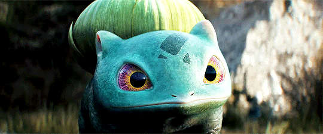

Bulbasaur #0001
Biología

Bulbasaur es un Pokémon cuadrúpedo de color verde, posee manchas de una tonalidad más oscura del mismo color con distintas formas geométricas. Su cabeza representa cerca de un tercio de su cuerpo. En su frente se ubican tres manchas que pueden cambiar de posición, forma o lugar dependiendo del ejemplar. Tiene como orejas muñones pequeños y puntiagudos. Sus ojos son grandes y de color rojo. Sus patas son cortas y posee tres garras en cada una. Este Pokémon tiene plantado un bulbo en el lomo desde que nace, esta semilla crece y se desarrolla a lo largo del ciclo de vida de Bulbasaur a medida que suceden sus evoluciones. El bulbo absorbe y almacena la energía solar que Bulbasaur necesita para hacer florecer el bulbo de su lomo y evolucionar en Ivysaur. Dicen que cuanta más luz consuma la semilla, más rápido crecerá y brotará, por lo que es muy común ver a este Pokémon tumbado echándose una siesta en lugares donde los rayos del sol lleguen a plenitud. Por otro lado, gracias a los nutrientes que el bulbo almacena, puede pasar varios días sin comer. Su cuerpo según a palabras de Ken Sugimori y Junichi Masuda en una entrevista, está basado en un anfibio (sapo o rana), al igual que toda su línea evolutiva.
El bulbo de Bulbasaur le ayuda a defenderse de los enemigos, y desde él puede disparar ataques tales como rayo solar y drenadoras entre otros movimientos.
No es muy raro encontrarlo en jardines y zonas cercanas a fuentes de agua. Se los puede atraer con el aroma de las flores. Según el anime, una vez al año, cuando estos Pokémon están listos para evolucionar suelen reunirse en grandes cantidades en un Jardín Misterioso mientras hacen un ritual a la luz de la luna junto a un gran Venusaur.